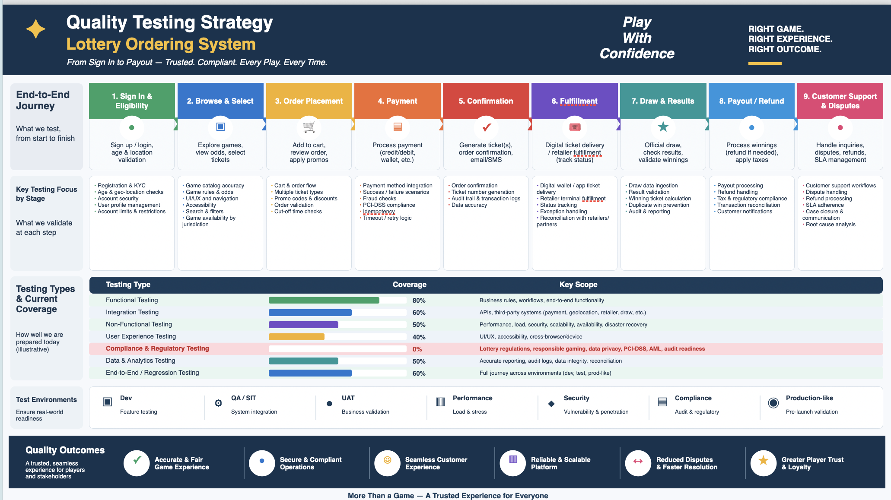

Quality Strategy
Test Strategy
Risk-Based Testing
Shift-Left
CI/CD Quality Gates
Metrics & Reporting
A quality strategy outlining the approach to testing across the software delivery lifecycle — covering risk-based prioritisation, shift-left practices, automation coverage and the quality gates used to keep releases trustworthy.
- Risk-based test prioritisation aligned to business impact
- Shift-left practices embedding quality checks earlier in the pipeline
- Layered automation coverage across unit, integration and end-to-end tests
- CI/CD quality gates enforcing minimum standards before release
- Metrics and reporting to track quality trends over time
Quality Strategy Overview
